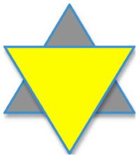
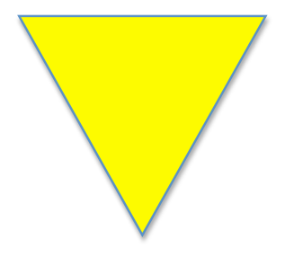
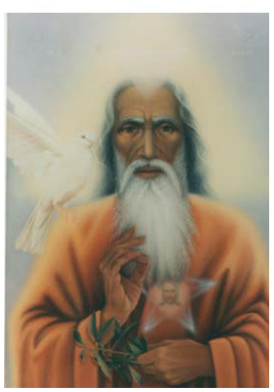

Chapter 1
1.1 Creation
[10-25; 10-29; 10-137; 15-207]
In a timeless epoch (period), which was characterised by non-existence and darkness (Erevos), nothing existed except the never ending and diffused energy of God (Anarhon). This omnipresent and omnipotent energy and light worked to create, with precision, what we know as the universe including the souls of Man and animals and all the other details including plants, water and fire necessary for the connecting link that is called “continuous energy”. God the Creator as Diffused Light created darkness. These two opposites gave the first motion to the chaotic heavens. This undetermined Power, which has no form and cannot be analysed, created souls through the words “Let there be Light” and non-existence was transformed into the Existing World of Souls.
Creation is an immense subject. It took place many Earth eons ago and it is still evolving. The three main phases of creation are given here briefly:
(i) Creation of psycho-spiritual entities: The souls were created before the creation of the worlds. The command “Let there be Light” was for the benefit of the souls as the souls were blind and could not perceive the Creator’s plan. The motive power of each soul is an infinitesimal ray from the Breath of the Creator, which gave them freedom of movement. All souls were created at the same time and therefore, all had the same age. No more souls have been created since. God initially divided the homogeneous breath-souls into two types: “A” and “B”. These breath-souls were perfect in all things since they were consubstantial with God and were created in His image.
When creating the cosmos (universe) God gave to every soul a free and independent spirit and inseparably connected them. Thus were created the psycho-spiritual entities that were then subjected to learning and evolution. The spirit is imperfect and subject to constant ongoing development (evolution).
(ii) Ancestral sin: God asked the psycho-spiritual entities to self- cultivate and evolve further using their own spiritual (soul) strength. Many of these entities followed God’s command but most did not and in preference indulged in the infinite beauties of the Heavenly Paradise in which they dwelled, undisturbed. God then decided to assist the souls to further develop/evolve by training them. He ordered one of his Archangels, Lucifer, to deceive the psycho- spiritual entities by promising them a new and better world where they could gain access into all the Mysteries of Heaven and acquire the knowledge of good and bad. All entities that had not previously cultivated themselves (their soul strength) fell into Lucifer’s trap. This we know as the ancestral sin or disobedience.
The apple promised by Lucifer while under the morph (guise) of a serpent, was Earth, the future planet where they would find everything they wished for. Lucifer showed them images of the Earthly life but they were not satisfied with just images. They wanted to experience physical reality and feel the nature of matter. Thus, the psycho-spiritual entities revolted against God and asked for a better life. God transferred them from the Heavenly Paradise to the Transit Centre from where they would be transferred in groups down to Earth. The accounts in the Bible are symbolic because “Adam” and “Eve” symbolise “A” and “B” type souls that were created and eventually descended to various parts of Earth.
The psycho-spiritual entities that were cultivating their soul strength did not fall into Lucifer’s trap and remained by God’s side as Angels and Archangels.
The penalty for the ancestral sin was the enslaving and entombing of each psycho-spiritual entity into a human body. To free a prisoner, ransom needs to be paid for freedom and since no human is able to liberate either himself or his fellow Man, the ransom was paid by Jesus Christ’s blood for all mankind. The circle of incarnations for psycho-spiritual entities that have sinned i.e. failed to cultivate themselves or added to their sins, is aimed at returning them eventually as perfected souls to Heaven.
(iii) The appearance of Man on Earth: The psycho-spiritual entities that were in the Transit Centre were free when the Lord by His Word from the infinity created the worlds. The worlds were created as material spheres and were in a trajectory. After some time they collided in such a way that the universe was on fire and created different atmospheres according to God’s wishes. God who by his Word said, “Let there be…..” created the stars and lastly the Earth from which the sun’s light exploded in darkness.
Upon the solidified surface of Earth, grass first appeared then the various animals in the evolutionary sequence. This evolution lasted for a vast number of Earth years. Man was created last, so that he would find all the material goods at his feet.
In some distant time past, a number of psycho- spiritual entities materialised as the first humans on planet Earth i.e. human entities. They came from the Transit Centre where God placed them after their expulsion from the Heavenly Paradise. They appeared in different places on Earth. These
humans had no age, that is, they were all at the peak age of Man. When they started to bear children, the differentiation of ages in humans appeared. Humans have no evolutionary relation to primates or any other creature.
When our ancestors were moved out of Heaven and moved to the Transit Centre, only the Angels and Archangels remained. They took control of the governance of the White State and each Angel was responsible for a separate area of management.
1.2 The seven days of Creation
[4-245]
The Old Testament states, in the chapter on the Creation of the World, that God created everything in seven (7) days. The number 7 (seven) is the number for Creation as well as for Destruction. That is, through the continuous interchanges of creation and destruction, within the Infinity, the world of Earth appeared for the traverse of humanity.
Despite dogmatic perceptions, Man has reincarnated many times on Earth to purify his entity. He is unaware of these phases of development because upon returning to Earth he forgets his previous existence(s) - except on very rare occasions. He never remembers his existence in Heaven. Man is reborn each time as a completely new human entity with the same soul and the same spirit and the same gender. These alter their strength on each incarnation, depending on progress made in Heaven. To the subconscious located within the soul, all this is known and is held in total secrecy from the spirit, otherwise there would be no need for the entity to reincarnate to redress its former sins.
On Earth the number seven (7) is considered to be a magic and mysterious number. It is difficult for humans who do not have an aptitude for this, to interpret. According to God, (Anarhon, Primal Cause) the duration of one day of creation is a vast amount of time that is impossible for us to note by number. God worked in total for six (6) days and rested on the seventh. Each working day lasted for the same amount of time. The duration of the seventh day started when Man appeared on Earth. It is ongoing and will continue until the end of the world (end of time). The duration of the seventh day is the same as each of the other six working days. Therefore you can imagine how many infinite ages have accumulated within the seven days of creation until the completion of the world.
This section regarding the duration of the time it has taken for the Divine Creation is one of the most difficult to comprehend. God is not human but is the creator of humans. Man has inside him a sample of Divinity (God’s Breath) and the independence of spiritual intellect (spirit) which many times gets confused and is unable to grasp even the meaning of God. Therefore since he is unable to grasp this, how can he try with mathematical equations and other means to discover the balance of himself and further more since he is unable to solve his immediate problems, how can he expect to solve those that are beyond his power?
1.3 The many stages of Earth and Man
[10-32; 10-43]
The first Man was on the same level as animals and did not possess a cultivated spirit or logic. The only differentiation was moderate cunning. It could be said that some animals at that time were more cunning than Man. Animals were guided by an
instinct that was far more developed than that of Man, the reason being that animals appeared on Earth before Man. However, over a period of time, Man, through the necessity of self preservation, using observation and mimicry sharpened his cunning and in time developed his other faculties to become the superior creature of this world.
The first humans ate fruit and other goods provided by the Earth. When they started hunting animals, primarily for revenge, they ate their flesh. The same thing happened when they fought other groups of humans. This is the reason cannibalism existed, not for sustenance but for revenge.
Earth and Man have gone through many stages of evolution that are unknown to current Man. There were humans that current mankind could never imagine and history has many gaps not only due to our ignorance but also due to our lack of knowledge of civilisations greater than those of today.
During ancient times Man created gods from fear and ignorance. Gods were of both sexes since Man and animals had two sexes. The ancient Greeks owe their gods to other civilisations and have developed them through poets and myths. That is, the religious fervour of the ancient Greeks was a reflection of other religions. These humans gave credence to dreams and later, to oracles. Some conversed with their gods many times and some descended to Hades and then recollected what they had envisioned. Their imagination filled any gaps in order to become more credible to fellow citizens therefore their perceptions/recollections were partly wrong.
In those times the Heavenly Administration consisted of Angels and Archangels that never descended to Earth. Their names will remain unknown until they
decide to reveal them.
These Angels under the guise of gods protected some humans using mediating voices from the world beyond. That is how the ancients could get in touch with their gods or goddesses. Unfortunately, Man, when he receives such a blessing adds something from his own imagination.
All mythologies have the same source.
1.4 Light and Darkness
[10-47; 10-83]
Before creation there was dense darkness (Erevos). You may ask, was God in the darkness? No. God was/is Light but He was covered with the mantle of darkness within non-existence. When God removed His mantle and His Divine Voice was heard within chaos, with a command “Let there be Light”, the Sun glowed. Afterwards, creation started as described.
Darkness remained as energy and was given to Lucifer, with the meaning that, within the sphere where two opposites operate, an object can be fashioned, this being either a living entity or a lifeless object i.e. dead from the aspect of matter. Therefore darkness, despite its energy, is not all bad because it is God’s mantle.
Darkness is not harmful if we know how to benefit from it; if not, then it is our fault. The recurrent action, either good or bad becomes second nature. This is called pathos. This pathos leads us in the opposite direction from the one that God has directed us to follow.
Light and darkness is the gold in which we set a
colourful stone and the whole thing comprises a jewel. A jewel is a lifeless object. However Man is a living jewel and if darkness attaches onto this living jewel then it becomes a worthless jewel. But if the gold draws Man to the purity of ethics and knowledge, then he acquires heavenly powers from the spiritual world and receives from them abundant light, pure and immaculate.
On Earth, we have the light of day to better distinguish everything rather than darkness. During the day Evil can take a thousand morphs (guises) so it can deceive your judgement. During the night Evil works better. Nevertheless, at night when there is peace and purity in Man’s soul and when this comes into contact with the Heavenly Divine Spirit, It produces the best work, superior in all aspects. Why in this case does Evil not interfere during the night? It is because the light of Man’s spirit is stronger than that of Evil.
You are able to judge and you are able to differentiate colours, therefore, why can you not differentiate between good and bad and between light and darkness? When you acquire the Divine Light, then even whilst in darkness you are able to see, differentiate and judge better than men who have not acquired the Divine Light.
When we say “good” it does not mean it is good to always gratify our brother’s wishes. Of course he would be satisfied with you, but you would become a participant in his bad habits. This is a small example where good is not virtuous, therefore, it is bad. The true light comes from above. Light from below is darkness under the illusion that it is white. It is black!
When we say “enlightenment” we mean the energy that conveys knowledge to the human entity. This

enlightenment of knowledge is divided into two parts:
1. The White enlightenment, i.e. Divine Energy
2. The Dark enlightenment, i.e. the intervention of evil knowledge.
These two enlightenments are in constant combat as opposites in order to be successful with their followers. Evidence of this battle, is that men never agree on a common interest. This of course is bad for everyone, but it is good from the point of view of having freedom of judgement. Both sides try to find convincing arguments to persuade one another.
A
A'
Draw an equilateral triangle A and now place on top of it another equilateral triangle A’ with its base at the top. This way you would have drawn a 6-pointed star. This symbolises the power of good (A’) and the power of Evil (A).
The triangles represent both forces as having equal strength, because this is the wish of Anarhon.
There is a need for a balance to exist between the two opposing factions and for this reason Earth will never become a Heavenly Paradise as it is the battle ground of Good and Evil.
Because the Divine Breaths of men (souls) find themselves in the Kingdom of Evil (Earth), it follows that they are affected by it, since their body was created from matter. Evil, taking advantage of the situation that favours it, proclaims through its enlightenment, tempting and devious words that are never to Man’s advantage. However, some men find Evil attractive and in this way Evil spiritually blinds them and they carry out what they should avoid. This way Evil acquires more followers on Earth. When this is the case, the Lord by His enlightenment inspires Man who, through his words and deeds, deflects evil actions.
It is of great necessity for a balance to exist between these two combating forces.
The dark enlightenment is not pleasant but it is necessary for the evolution of the psycho-spiritual entity. God knows what He has created.
1.5 Holy Trinity
[15-244; 3-9; 10-251; 10-297; 15-246; 15-248; 6-159]
There was nothing before creation except for the undefined Energy within the dark non-existence. This Energy started the Creation and for this reason it is called the Unknown Principle of All. Since He created everything He is also called the Creator and Father. For speech/talking purposes He is also called God because the Unknown Principle of All is neither a Being nor a Spirit but something inconceivable by the human intellect. Another name for God is First Cause because He has no beginning and no end.
The Unknown Principle Of All (God) is the highest authority. Nobody can see Anarhon (Unknown Principle of All) but He speaks with Jesus Christ, the Holy Spirit and the Leaders of the Spiritual World
(Heavenly Kingdom) and seldom with mortals. There has to be a specific reason of spiritual importance for God to speak to mortals. Anarhon is everywhere and ever-present, because He provides motive energy to all life as He is the life-giver. He personifies Love and His power is infinite Love towards all His creations even though His creations may not perceive it. The Father has endless patience that His creations by their own will, will eventually return to Him.
The soul of every living being constitutes an infinitesimal ray from His essence. His presence is widespread in the whole universe through His Breath that constitutes the soul of all. For this reason we say that He is omnipresent and omnipotent.
God, whom we all have in mind and call in our hour of need, is something we cannot decipher with all our powers, spiritual and psychic. Since He is not visible, we have the impression, that since we are visible to the eyes of our fellow men and succeed in the acquired knowledge of other earthly life, we have the right to be considered small gods. There is no more arrogant and evil thought than that!
From the Holy Trinity, only the first Branch, i.e. the First Cause, is impersonal. He cannot be analysed, He is not defined and He is not personified. And yet, His Face is mirrored in Christ if we want to see His Face. If however, we wish to meet Him, we will find Him inside us, if we are able to overcome the obstacles of our passions.
The second Branch of the Holy Trinity is Jesus Christ. When the First Cause rested after creating the World, Jesus took over the governance of the Universe as the One and Only Son of His Father. He is the Head and Leader of the Heavenly Kingdom and is called Lord. The Lord is the direct transmitter
of His Father’s Will, that is, He directs the Leaders who co-inhabit in the Palace of the Lord and gives the necessary directions to all sectors of the Heavenly Kingdom. Nothing happens without Jesus Christ’s permission. The organisational structure of the Heavenly Kingdom is based on meritocracy.
The Lord did not come to the earthly world as God but as a simple Man. His Father, the Creator of All, sent Him. As a simple Man few humans knew Him until the age of 30 when He assumed His Sacred Duty. As a Man, He received directions, through His perception, from the Holy Spirit. He knew very well what awaited Him during His short lifespan.
To save Man the Lord came to Earth as a human and died as a human. When He ascended into Heaven He accounted for His actions undergoing the same examinations as other psycho-spiritual entities when they die. If this was not carried out and He came to Earth as God then His Divine appearance on Earth would have by necessity affected humans. But His purpose was not to compel but to draw humans through Love, through the Word and through the indication of benevolent Peace.
His teachings were simple but full of concepts that could be understood by all including the wisest of His time. Through His parables He strengthened Faith in God, love towards Man and justice towards the wronged. His sayings were always correct and incomparable. He always won the love of the simple humans, the ill and the ones who had been wronged. He was not only a healer of the body but also of the soul. “Soul” in this case, includes the spirit that is the psycho-spiritual entity since soul and spirit are inseparably connected. From the age of 12 until 30 He did not live in His native country but elsewhere on Earth.
The Lord’s sacrifice placed His teachings on solid foundations. The fragile dogmatic systems came later. These systems will collapse before the true teachings of the Lord will be restored.
The third Branch of the Holy Trinity is the Holy Spirit. What is not widely known is that this high entity of Heaven had previously incarnated on Earth and specifically in Old Delhi, India, about 25,000 years ago, with the name Pharah. Much later He incarnated a second time as the prophet Enoch of the Old Testament.
The Holy Spirit as a Branch of the Holy Trinity is impersonal. As Archon Pharah though, His personality is like that of Jesus Christ. In His communications with mortals He uses the name Pharah. On a few rare occasions He identifies Himself as “The Holy Spirit”, in order to impress His authority on certain humans. Lord Pharah is the Spiritual Sun of our souls, the supreme Knowledge Star; He is the rudder of the Heavenly Kingdom whose captain is the Lord.
In the New Testament He is mentioned as Paraclete. He is the Light of Truth; His symbolisation of the dove does not mean that the Holy Spirit is a bird but that His symbolisation has an unknown spiritual meaning.
Because of His various tasks Lord Pharah has many names such as: Light of Truth, Immaculate Light, Holy Light, Voice of Truth, Spirit of the Lord.
The symbol that represents the Holy Trinity is the triangle shown here. Note: that the base of the triangle is above, NOT below, indicating God’s position. God’s base is Heaven NOT Earth! The other two sides are Jesus Christ and the Holy Spirit i.e. Truth and Pure Light supporting the infinite power of Love.


Lord Pharah
1.6 Christ descended on Earth as Man
[10-297]
Amongst human entities there are some that have descended to Earth not to expiate their previous sins but to fulfill a Divine mission. These entities are Angels and Archangels who from the creation of the world remained faithful and devoted to God. They appear on Earth to receive the baptism of earthly life, that is, to feel as a human earthly life and to fill this gap of knowledge of their psycho-spiritual entities.
Bear in mind that Divine entities and similarly Evil ones, without incarnating, for a Divine purpose or an Evil one, frequently appear as common men whereas in reality their bodies as well as their garments are artificial. They appear in order to protect psycho-spiritual entities that are destined to live or to destroy the lives of entities destined to live on Earth. They appear and disappear amongst us, without us sensing them except in a very few cases.
Christ did not appear on Earth but was born as a simple Man. He lived and worked as a humble son of a human. He did not exert any Divine power to prove that He was really sent by God with a mission to save the souls of humans who had already been derailed.
If you judge Him as God by His miracles you are mistaken. Many humans have performed miracles. They have the Divine gift of concentrating the power of Faith and will. Because at the time of Christ many were uneducated and naïve, Christ through their Faith rarely persuaded their will to assist with their energies, through His imposition, to perform a miracle. It is not the miracles that declared Him Saviour but His teaching and the simple images that entered the hearts of His audience.
Christ descended to Earth as a human. He had all the human weaknesses; He overcame those that lead to destruction without ceasing to be human like every one else. He wanted to feel humanity from the point of view of pain, misery and need. He detested lies and did not conceal the Truth whenever He could confide it.
Christ told His disciples many things about His life. These have been removed from Holy Scriptures because some did not Love the Truth as He did but they loved the lies of the Other (Evil). Christ worked tirelessly for Good. His Love towards mankind was so great that to save it, He sacrificed Himself on the cross.
After He died, He proved His Divine superiority to humans. But He ascended to Heaven as a human and gave an account of His actions so He would not be separated from the large brotherhood of humanity. Afterwards the Heavenly Management
gave Him the Scepter of Authority and all together with the Angels praised in hymns the SON as Glorious of His Father. Majestic were the celebrations of His return to the bosom of the Spiritual World. His coronation was indescribable.
Therefore, Christ has descended to Earth as a simple man and returned into Heaven as a simple soul. Here lies the grandeur. His act acknowledges His Divinity and His elevation to the throne of God.
1.7 Holy Spirit - Pharah
[14-265]
In the last farewell dinner (the Last Supper) with His disciples, Jesus promised that He would send to the world the Spirit of Truth (Holy Spirit), Paracletus, to complete His teaching.
The mission of Paracletus to the world after Jesus’ departure, has the following meaning:
1. To remind men of everything that the Lord has taught, that they may have forgotten or that may have been modified or lost its original purity.
2. To complement the Lord’s teaching in the areas that He avoided discussing with His disciples because they were not ready.
3. To check humans’ sins, their justice towards their brethren and the judgment that is awaiting them in the Heavenly Court.
1.8 Mother of the Lord
[2-22; 15-254]
The highest female psycho-spiritual entity is Maria (Maryam, Mary), the Mother of the Lord or the Blessed Virgin. She resides with the Lord in His Palace. Her position is very high; She is, by exception, an Honorary member of the Council of the Lord and She bears the title Hostess of Heaven. She has first priority for Her requests to be heard by the Lord. She continuously acts for the salvation of thousands of humans, most of whom are unaware who has acted on their behalf.
The Mother of the Lord enlightens and heals and She gives strength, given to Her by Her Son. She administers these powers at Her will. Great is Her Grace. Blessed is Her appearance at the Council of the Lord where Her voice is heard and the soul of the immortals and mortals that are fortunate to hear Her are and will be rejuvenated.
Many Angels serve The Blessed Virgin in Her work. The respect of the Spiritual World towards Her shows the magnitude of Her service to humanity. Many times She appears among humans to save someone from certain danger. She is often dressed in black. There are many titles attached to Her name and many churches devoted to Her. This proves the piety and the Faith of the humans who realise that help and miracles are through Her intervention.
The Mother of the Lord is surrounded by many female personalities who are Her escort. Woman is not only subordinate to Man but in many areas has successfully accomplished distinctive missions of her own. When a woman assimilates the word “Love” not by her spirit but by her heart then she gains
ascendency into Heaven and holds a special position. Woman is a secret treasure when you realise her value. When she deviates from the correct path, the diamond converts to coal and brings disaster.
1.9 Freedom and wisdom
[10-334]
Freedom without wisdom does not make sense because even animals in the jungle have freedom but they lack wisdom since they are directed only by their instincts. Certainly freedom is the major quality that Man has received from his Creator. Without freedom Man is reduced to the same level as animals.
We are talking about freedom of movement in general, but in Man there is also the freedom of speech. Through speech Man puts forward the way and means of movement, always within the framework of wisdom, so that his movement ends up in productive and progressive work.
If freedom of speech does not contain wisdom then this comes from the bestial instincts of primitive Man and it is not based on logic but on the frantic dynamic push of persuasion and fraud.
Total freedom of thought means madness when it is not accompanied by wisdom. The Evil Spirit does not impede the freedom of Man but impedes his wisdom, which becomes an encumbrance to the work of Evil.
There are some human entities that are of the opinion that their freedom of movement and their speech benefits their fellow man like no other can. These humans are supercilious and egotists that
Heaven dislikes because all their movements and sympathetic words are superficial in order to project themselves as unique.
Wisdom without freedom is useless. It is a treasure that remains enclosed in a vault. It is an uncultivated Divine direction. It is like a perfume that remains enclosed in a bottle and its obvious aromatic scent does not drift to provide a light and pleasing attraction to its surroundings.
As you realise, wisdom has value. But it does not have freedom of movement unless freedom leads it as a guide. Freedom is a long-fused dynamite that does not tolerate being enslaved. It revolts, but wisdom keeps it in check until the appropriate time.
Absolute freedom does not exist even in Heaven. In Heaven there is more freedom than on Earth. However if psycho-spiritual entities had absolute freedom then from the lower levels, forbidden mysteries would be communicated. This is one of the reasons why entities at the lower levels are always accompanied by Guardian Angels.
1.10 Love and hatred
[10-49]
Many things have been said and will be said about the meaning of these two words: Love and hatred. Nevertheless, Man continues to be blind and not able to realise the magnitude of the power of Love and the tremendous fall of Man because of hatred.
Love and hatred are two opposite extremes that never meet at the same point. When hatred enters into the chamber of free thought then Love departs and when Love enters into the chamber of pain and evil, then with tenderness and hope it heals the
wounds, soothes the soul and regenerates the spirit.
Love is the Lord’s Divine Kindness. Hatred is the harsh and evil adviser of lies, injustice and death.
Tears are a pause between these two meanings. Man cries from happiness or from sorrow, from tyrannical love or from indescribable hatred. Never take into account tears as an indicator of a situation. They are false unless they are analysed under the Heavenly light.
When the meaning of Love and hatred is converted through the senses into productive and repulsive energies then the spirit enlightened from Heaven gives victory to Love and defeat to hatred. The meaning of these two forces in their abstract view is maintained untouched, so that their contrasts exist in the world of matter.
Love will emerge triumphant irrespective if hatred draws power from matter which is its mother. The will to do good or evil, to reach the pinnacle of Love or to fall into the abyss of hatred, is in your hands. God gave us free spirit. Alone we need to enlighten it so we can acquire correct judgement for the differentiation of meanings.
1.11 The Leaders and Teachers
[15-253]
At the top of the Heavenly hierarchical structure of the spiritual world is the Holy Trinity followed by the Stars of the Lord who reside in His Palace. Many other entities having various titles such as: Leaders and Teachers, follow the Stars of the Lord. Each one of them has specific duties and they never step over into each other’s jurisdiction. There is perfect harmony and cooperation between them for the
common purpose that is, the enlightenment of humanity. The specialities of the Teachers are many and varied. They teach all the student entities of Heaven who are in the various Stations or in the Transit Centre.
The Great Leaders act in consultation with the Stars of the Lord. Other Leaders, even though they are enlightened, always need to consult the Great Leaders. The lower citizens of the White State are taught in hierarchical order. However, there are many who, although they were considered to be great spirits on Earth, have cultivated a kind of egoism. Their subordinates teach them because the former claimed to know everything without being Evil.
The White State has one Leader and one attendant. These are, in other words the King and his consultant or his secret-advisor. There are also Teachers who are divided into three categories:
• The Ruling Teachers, who reside with the Lord,
• The Ministers, who take part in the Council of
Spiritual Splendour
• The Teachers and Leaders, who, even though they can be compared to any House of Representatives on Earth, have greater power than them.
In their Councils, they decide the fate of each soul. The hierarchical order is:
• Holy Trinity • Stars of the Lord (also called Masters) • Ruling Teachers • Ministers • Teachers and Leaders
The word “Councils” means Houses smaller than the Lord’s. There are 13 such Councils, apart from the Council of the Spiritual Splendour. In each Council there are 10 Leaders, many Deputies and Assistants. They all ascend the scale of evolution so that, at some point, they reach the Council of Spiritual Splendour and from there they ascend and follow the path that leads to the Palace of the Lord.
1.12 Heaven and Earth connections
[10-104]
This section is divided into three parts with two subdivisions each:
A. Evil spirits 1. Satanic 2. Fickle
B. Supreme good spirits 1. Angelic 2. Enlightened
C. Lord’s Light 1. Holy Spirit 2. Leaders of Spiritual World (Stars)
A. Evil spirits are many because as entities they have not evolved. They are delighted with the success of their every evil action and unhappy when they do not achieve their aim. They are characterised by every branch of Evil. They are sadistic, unrelenting to the pain of others, sardonic in their laughter and harsh in their decisions.
1. Satanic: are the fallen Angels and for differentiation from the supreme good Angels they have black wings in the shape of a bat.
The human imagination, in order to instil fear into its uneducated brethren, portrays them with horns and tails to convince the faithful that they behave as humans but with an evil, bestial aim. The wings are symbolic, to indicate the speed of these Evil spirits who Faithfully serve their leader Lucifer (Archon of Darkness).
2. Fickle: are all the spirits who did not wish to self punish for their own benefit but who remained in Heaven derelict outside the Heavenly Kingdom until their total demise. They are in contact with Evil spirits and operate at their pleasure. Many times due to their evil enlightenment they inspire their human brethren into hideous and distasteful actions. One sometimes wonders how is it possible for a person of high standing to carry out evil actions? It is because in a moment of weakness the fickle spirit inspires him to carry out an action that he normally would not. This weakness in many human entities is due to lack of their vigilance.
B. Supreme good spirits these are also numerous, otherwise it would be impossible to maintain the balance in the Universe. The Lord has foreseen everything in great detail.
1. Angelic spirits: There are many categories and they have enormous speed. Some of them remain in the service of the Lord and the Creator of All. When an Archangel or Angel receives directions or is given a secret mission by Anarhon, the purpose and destination is not revealed to others. Only the receiver knows the secret. The Angel in this case is as a sealed envelope. These Angels are specialists.
2. Enlightened spirits: these are the ones who
hold special places in the Organised Kingdom of the Lord. That is, those who are following the path to the Palace of the Lord. They are the university students of enlightenment enrolled in the first to the last class. They are Teachers of the highest purpose of Divine Knowledge.
C. The Lord’s Light is triadic; this does not mean that enlightenment is transmitted from the three sides of the Triangle. It is transmitted from the Fountain of incorruptible Knowledge. For us God is an abstract concept (since He is the Unknown Principle of All). Jesus is a specific concept because He appeared in our world and enlightened believers and non-believers. The Holy Spirit is the link between the other two sides and through Him the connection between Heaven and Earth was established. For the Evil side an opposite link was established. 1. Holy Spirit: The Holy Spirit is the Archon of Light, that is, of Knowledge. The Holy Spirit administers the perpetual Fountain of Knowledge that the Creator has created. He is the Spirit of Good and Morality. He is the Chancellor of Heaven’s University. He has many names including Immaculate. In His communication with Earth, He uses the name Pharah. He does not accept contradictions from ignorant humans but He only accepts Faith in His words that originate from the true path of the Lord. 2. Leaders of Spiritual World (Stars): There are very few and they reside with the Lord. They are in nirvana. They are called Stars of the Lord. They constitute the highest authority of Heaven that permeates throughout everything. God the Creator is resting until the completion of Earth. His work is in the hands of the Lord and Saviour of souls, Jesus Christ.
1.13 The Angels’ initial descent to Earth
[10-34]
Angels faithful to the Lord have from time to time descended to Earth to participate in the earthly life in order to perfect their entities. That is, to obtain an understanding of matter, a perception of its attraction and what is the aim of matter as a power of Evil. After an infinite number of centuries when these Angels carried out their duties on Earth and returned to Heaven, they were placed in management positions as the most perfect creations of the Lord. The management of the White State is in the hands of the Leaders of the spiritual world.
Angels who did not descend to Earth remained in Heaven as guardians or messengers of the Lord. There are an infinite number of legions of Angels, divided into many divisions. Many of them did not abandon their old positions even though they have passed through Earth.
Many of the Angels have come to Earth as ordinary humans in order to know the material nature. Those who were good received a position in the Kingdom of Heaven after their recall and later they became great Teachers and Leaders next to the Lord. Those who were seduced by the material world and sinned became members of the Evil side. The Angels, who have never known Earth and remained in Heaven next to the Father, are powerful in strength, so that even if some of them incarnate, the Evil side will not tempt them. These Angels are sent to Earth for one or more missions and thus know well the attraction of matter and they bypass it without danger.
One of the high points in the history of nations is ancient Greece. Even though many of the wise men of that era seemed materialistic, in reality they did
not dare speak the truth. They deliberately created a false religion to attract the uneducated humans and through myth taught ethics as the basis of virtue.
Mythology delights the small-minded and at the same time instils the religious idea. The great wise men researching the meaning of truth with their perception captured the spiritual power of One, the unknown One, which in their eyes was Divinity.
To appreciate what has been said let me give you the example of Pythagoras who first taught at the Oracle of Delphi: “Know Thyself”. He established prophetic temples without fighting the then existing religion. Through mathematical calculations he showed the existence of the One , the Creator of All. This truth was not announced to the public in order not to affect the established Faith in the gods of that time. For this reason Pythagoras glorified the Creator without the knowledge of others.
1.14 Angels and Archangels
[2-23; 4-20; 15-255; 3-165; 10-130; 10-36]
Angels and Archangels are entities that have not committed the ancestral sin i.e. they have not disobeyed the orders of the First Cause because they have remained in the Heavenly Kingdom. When the earthly life evolved, many of the Angelic entities started to incarnate on Earth, in order to receive material baptism and to know the material side of creation. However, there are still many who have not done so. The superior Archangels do not need such an earthly experience because they know the material world through other means.
In Heaven there are legions of Angels that have remained as helpers of the First Cause since the beginning of the World. In our days, the highest
positions are taken by the spirits that have appeared two and three times on Earth. Of these, many were Archangels. The non-incarnated Angels will come to Earth when world peace is established and Heavenly Light is transmitted throughout the whole world. In other words, when good is consolidated and only a little of the Evil spirit remains, the Angels will come down to take over the authority into their hands, founded on the new lights which the Lord will give to humanity.
Angels and Archangels are divided into orders that have nothing to do with the material world. The most superior of them are in the service of the First Cause. All Angels are of type “A” souls. There are no type “B” Angels. Angels are usually depicted with wings but that does not mean that they actually have wings because, from an ontological point of view, Angels are no different from all the other entities i.e. they are psycho-spiritual entities. The wings are symbolically part of the exterior appearance that humans have attributed to Angels, meaning that the Angels are very fast in their actions either as messengers or as protectors of humans or in undertaking other missions. The Angels do not have wings but their speed is enormous, inconceivable and unimaginable. The human imagination has conceived of wings to differentiate the souls of the Angels from other souls.
If the psycho-spiritual entities that are newly arrived in Heaven (that is those who died on Earth) do not wish to comply with the Heavenly Laws then they are left alone and the opposite side can attract them. In time, they would come to their senses and become compliant. This work is carried out in stages. Unrepentant spirits, who did not have compassion for their fellow man, are sent directly to the dark side and have the freedom to interfere with the various communications between Earth and Heaven
(séances). Their sole purpose is to bring confusion. They easily learn the Devil’s “tricks” until they reach a situation that leads them nowhere and after a while they seek repentance and beg Divinity for mercy. These spirits will then follow a sequence of teachings and await their return to Earth to be tested again.
There are Angels that belong to the Devil and they are portrayed by humans as having bat-like black wings. They are not called Angels but daemons. They do not serve the Lord, but serve their leader the Devil. They form the opposing elements of the White State with their own Government.
There are Angels which are persecutors of Evil spirits but which are seldom sent to fight senior Evil spirits. The Angels’ radiation is capable of destroying many of them. If God wished, He could destroy all Evil Angels and clear the atmosphere but His aim is for them to exist in order for His greater aim to be achieved. Therefore, between the anvil and the hammer, the human entity is forged to produce quality. You are afraid of fire, but without it you cannot live - it is necessary for earthly life.
Through Angels God sends messages for the protection and guidance of humans who have His favour. This is why many times in their dreams humans see strange persons who they have never met before. The Angels impersonate human entities so they can transmit the Heavenly messages. If they appear as Angels, humans would be terrified and the freedom of their spirit would be suppressed. The Lord wants humans to follow Him with a free spirit and not with a suppressed spirit, because with a free spirit, more soul strength is acquired.
Angels are the operating spirits of the Heavenly
Kingdom. They have many duties, according to their specialities and degree of evolution. One of their most basic duties is the protection of humans as Guardian Angels. In general, all actions taken by the Guardian Angels follow the regulations of the Divine Laws that prohibit any kind of coercion. Therefore, when a person follows the wrong path and his or her free spirit insists on walking on the wrong path, the Guardian Angel is unable to effectively help this person.
All Guardian Angels do not have the same power and there are many categories. Even the Great Teachers of Heaven belong to one of the higher categories of Guardian Angels, with the difference that the Great Teachers cannot become Guardian Angels of humans who do not deserve their protection. Many times one human entity may have more than one Guardian Angel. Each Angel protects the human in different ways. It is the same as on Earth where we have a teacher for mathematics, for physical education, history, etc.
Nationalities do not exist in Heaven, there is only one State. The State of the souls is called The White State because all the souls are white, that is, free from matter. It is possible for a French person to have a Guardian Angel who in its previous incarnation was from India or for an Israeli to be the Guardian Angel of an Arab.
After death, the majority of the recalled psycho- spiritual entities are followed and guided by their Guardian Angels. Guardian Angels are entities that have been specifically instructed to guide the recently departed earthly psycho-spiritual entities. Some novice Angels are assigned to such duties to get acquainted with their new duties as Heavenly apostolic energies that guide those in need, without holding high places. If one of these novice Angels is
unable to bring a newly arrived psycho-spiritual entity to his senses, then a more experienced Angel, who is normally put in charge of perverse and non- compliant spirits, replaces him.
When an Earth-bound entity has a special mission from Heaven, its Guardian Angel is one of the Great Teachers. Many times there are humans with good intentions and depending on their soul strength have two, three, or even four Guardian Angels in order that they do not digress due to the weakness of their soul strength. Female entities become guides who forewarn and deliver impending announcements. They have a special place near the Mother of the Lord. Their work is usually difficult, however because of their persistence they are always successful.
Why, when Angels sing, does everything exist in a dazzling light? It is because the harmony of their sweet voices brings to life the Love of the Creator towards His creations. The sound of their voices projects a radiation that opens the path from which the power of Love is channeled towards Earth. This Love calms the human soul, reinvigorates hope and stabilises Faith. This Love is channeled where it is required to soothe and revive morality. The Angels are the transmitters of God’s Love towards humanity.
In other words, the Angels’ chant symbolizes the acquired strength of Love from God to favoured humans.
The Angels sing with joy when a human realizes that he has to live between the two extremes. That is, to live a balanced life. The Lord indicates a balanced path to humans in order for them to enjoy the Angels’ chant.
A few entities are sent to Earth with a special
mission and they are protected by the Light of Truth which all obey. When this Light is given as a guide from the Lord to some, its radiation is also received by others. It is increased and it crystallises the meaning of the utterance to the earthly psycho- spiritual entities, which accept this as necessary for soul guidance.
As stated, there are other Angels who serve God. Some are singers; others are musicians, guards, etc. There are a variety of Angels who perform major roles in the Celestial Heaven. There are Angels who develop strategy, inspire, guide, announce and perform many other functions.
The Cherubim and Seraphim are two of the Orders of Angels that belong to God. There are also a number of subdivisions. You will learn of these when you find yourself in Heaven and when you have been promoted, that is, when you do not have too many sins. In these large orders of Angels and Archangels are included the Musicians and Hymn Choirs. The singers have melodious voices and there is a clear distinction between the different voices. In the inner circles also belong the Guards of God. You may ask, “does God require guards?” Of course not. They are honorary guards and amongst other duties they transmit messages across the universe.
1.15 The Divine Laws
[10-165;15-251]
The Laws of the Lord were decreed before the creation of all. This means that these laws are totally perfect in their perfection! Nobody knows when they were established from an earthly perspective. They are immutable. In special circumstances, a human entity that is punished is not
fully punished because the Lord has predicted exceptions. For example, it is possible for a Man to have made amends that only the Lord knows. He then pardons the remaining sentence thus giving a helping hand. Our earthly judges are unable to do this.
Man does not have the right to remove his brother’s life, even if that brother has committed murder since the judge is unable to delve deeply into the conditions under which the injustice or murder has been committed. If the accused is mentally unbalanced then he belongs in a mental institution and not at the gallows. It is better to declare a guilty person innocent than to execute an innocent one.
The Divine Laws do not seek the punishment of sinners but their salvation. This is their ultimate goal. The predicted punishments are only for the restoration of the soul strength of the entity and for the latter to freely and willingly follow the path to the Lord.
The Divine Laws, that is the Unwritten Ones, were not formulated in order to do wrong but in order to provide the entities with what they are entitled to in Eternity. This is not a simple point for us to understand because we do not have an insightful spirit, otherwise we would understand how the Laws that we call “natural”, operate. Nature itself cannot act unless a Supreme Force of the Divine drives it.
The Divine Laws function like automata. In other words, they are not written text just waiting to be applied by some judicial official but their energy acts automatically where they have to be applied. Many things in nature happen by the non-apparent action of the Divine Laws. When a natural disaster, for example, happens at a place full of corruption and decadence, humans say that the unwritten laws of
nature take over. The humans are right in saying that the unwritten Laws are neither accidental nor non-conscious but that they act as a consequence of the unwritten Divine Laws.
1.16 The Mysteries
[15-251; 4-17; 1-60]
This issue is very difficult to comprehend but it is important for the functioning of the Heavenly Kingdom. The Mysteries are the Divine forces that the High Heavenly Entities use in order to achieve an immediate result in certain cases where they have to act. There are two main types of Mysteries: The Major Mysteries and the Minor ones.
• The Major Mysteries are used by the Stars of the Lord - those entities who are in Theosis (Nirvana). Only the Lord knows these Mysteries.
• The Minor Mysteries are used by other Leaders.
They are called Mysteries because no explanation can be given to humans but these phenomena. The Mysteries are forces in the hands of the Spiritual World and they are manifested to mortals as phenomena of unknown origin.
There are many Mysteries and they are divided into four major categories. The first Mystery is the Spiritual World, for every soul that enters the immortal Kingdom of the Lord. When the psycho- spiritual entity enters into immortality, it learns what none of the wise men of Earth knows. It cannot, however transmit this miracle to its brethren on Earth; this is prohibited. There are many Mysteries that are used by the Great Leaders and under their directions, by all the immortals, who are destined to bring forth some action in the world of attrition
(Earth).
There are Mysteries that only the Lord knows and only He can use them where He judges appropriate. None of the Leaders own these Mysteries. The purpose of Mysteries is to trigger the imagination of the mortals, so that the latter can see the pictures that vary according to the phenomenon more easily, through their “inner eye”.
Mysteries are energies with powers that are difficult to understand. Mysteries in an earthly image are the magic wand of the magician that transform everything and can create something from nothing in our imagination.
1.17 Evil’s nature
[4-124] Images of natural beauty that inspire the senses are very seductive. Everything that attracts Man has Divine drive and earthly temptation. The earthly attractions contain the wishes of Evil. Therefore, Man finds himself between Divine drive for his development and Evil temptation for his destruction. The spirit makes the decision for developing or elevating itself, or for regressing.
Man is easily deceived by the attractiveness of natural beauty and the weight of his desire and sometimes becomes indifferent to the Divine drive fulfilling his duty. Therefore the spirit with free choice decides, between desire and obligation.
When Man understands what his obligation is and follows this path then he is on the correct path. But when he neglects his obligation because he is tempted by life’s desires then he follows the wrong path, influenced by the Evil Spirit. Because all men exist on Earth they are more concerned with earthly
matters. Up to a point they are justified, but beyond this point they regress and knowingly walk in darkness.
Evil has two natural forms:
• firstly, the repulsive form of the Evil Spirit
and
• secondly, an Angelic form
These please the wishes of individual entities. That is, the Evil morph (form) generally speaking appears with the retribution of false justice and abhorrent sin, whilst the other form appears as the sweetest of Angels and the insincerity of Evil. Using the beautiful and sweet makes the poison of Evil that he offers to his selected, inconsiderate and unilluminated persons, more attractive. Therefore, by nature Evil has two appearances: the Evil and the Good. The first appearance is well known to all, the second requires vigilance and enlightenment so as not to fall into the clutches of Evil.
The physical images that surround you are all deceptive at all times. In order to discriminate between them you need special education. You will find this in Heavenly texts where the White Light gives you a way to emerge from the darkness that Evil has shown you as the Lights of Creation. These texts given to you through the Heavenly Voice and the real and True Light of the Lord have as their purpose to free you from ignorance. The sweet sounds, taste or feelings are often a hidden poison for your entity.
The unrestrained desire of an entity does not bring good results. Evil’s temptation is extremely powerful. The Divine drive is more powerful when the entity is enlightened. For this reason, the
Heavenly directions are given to strengthen our enlightenment in order that we can overcome Evil’s temptation with Angelic form.
In other words, Evil can appear as a holy person who talks about good and virtue in order to first attract the trapped one and then convinces him to give him false directions to the detriment of his brethren and to himself, without the latter understanding that he has been deceived. But because the one who has spiritual powers can have objections, Lucifer brings the woman in between. He gives her the shape of an Angel, ethereal grace, sweet tongue and unmatched attraction. And behold, the wise Man turns into a great fool.
So what is the shape of the Evil One? It is the energy to which you ascribe various forms, sometimes of a monster and other times of hypocritical innocence of the type of Mephistopheles. In reality, the Leader of all Evils, which you know as Lucifer, is an idea within your spirit. This gives him flesh and bones.
Devote yourselves to the sincere and spiritual teachings which are full of Love so you will not find yourselves within the bosom of Evil and your voices, in despair, do not become voices in the wilderness.
1.18 The role of Lucifer
[4-124; 15-260; 14-230]
It is known from religious tradition that Lucifer was the best of the Archangels. After his defection he was thrown out of the Heavenly Kingdom together with all the other fallen Angels, of which he became the Leader. He is also known by other names, such as Satan, Evil One, Beelzebub, Belial, Lord of Darkness.
Lucifer remained in Heaven in the Darkness of his region. But he rules the Earth, as a battlefield. His power is immense because he knows secrets of the Father and from these secrets he derives what he needs for his work.
Lucifer’s authority is on Earth and his work is to drive humans to sin. For this purpose he uses every means of temptation.
All theological analyses of Lucifer’s work are extended and complex, stemming mostly from apocryphal texts and containing much obscure symbolism, not all of which are correct. We will focus on two points here:
How Lucifer’s authority started and what the limits of his authority in influencing humans for Evil are:
a. Lucifer’s authority Official dogma accepts that Lucifer through exercising free-will revolted against God because of his arrogance in wanting to be equal to Him.
In the texts of the “Divine Light” it is clarified that Lucifer followed the order of the First Cause to transform to Evil in order to serve the purpose of the Creation and in order for all opposites to become manifest. Through the clash of opposites, the evolution of the psycho-spiritual entities would be realized. This took place before the creation of the Worlds.
After the decision of the First Cause, the Evil One appeared as a serpent to the souls who lived carefree in the Heavenly paradise and he promised them a better world. Thus, most of the souls were seduced by his deceiving words and the incarnations to the material world began. The entities that
followed Lucifer became the daemons of Evil and formed the Order of Darkness.
In this way, two opposite Orders were created; the Order of the Good and the Order of the Evil spirits. The Leaders of these Orders, i.e. Jesus Christ and Lucifer, are symbolized by the brothers Cain and Abel in the Old Testament.
Evolution of the psycho-spiritual entity could only be realised with the creation of opposites. For this reason, Lucifer undertook a very difficult, painful but totally necessary mission, within the framework of the completed Creation of the First Cause.
Those who follow Lucifer and succumb to his temptations either as psycho-spiritual entities or as humans are led astray from the duties of their own mission, which is to avoid the traps of the Evil One.
b. The limitations of Lucifer’s authority The authority of Lucifer to influence humans towards Evil is not limitless but it does depend on the spiritual inclination of humans towards him.
Since the free-will of the spirit is a regulation of the Divine Laws, the Evil One does not have the right to use force. Thus, he tries to seduce them with his own methods.
If Evil spirits attract humans, this means their inner world has flaws and they should work on them. In other words, the Evil One with his traps is the controller of the inner quality of humans. If this quality is pure and clean, he cannot affect these humans in any way.
This is the whole essence of the problem with Evil. The purpose of its existence is to cleanse the inner world of humans from all the detrimental elements to
enable their entities to evolve to higher levels. Whoever succeeds in this can no longer be influenced by the powers of Evil and gains immortality within the Spiritual World where Evil does not exist.
This is the general course of Creation. All psycho- spiritual entities will eventually become perfect, ridding themselves from all attractions of the opposites. Lucifer will then remain alone, without followers and he will report to the First Cause about the completion of his mission. After his report, he will then also join the Heavenly Kingdom. This process is part of the Heavenly Mysteries.
The Evil Spirit is related to all material problems of your world. With these material means, it creates discord, injustices and revenge. In every evil action and injustice carried out by humans, be convinced that Evil acts. For the first time the Heavenly Kingdom is sending its gifts to humans. These are the luminous learning of the Spiritual World to the egoists and the unyielding in the Faith and the existence of the God.
The Evil Spirit is unmerciful, evil-minded and deceiving. It attracts through the desire of Man to everything that is attractive and it then abandons him to his fall, chuckling from pleasure. There are many humans who make fun of the invisible elements of Good and Evil while they have already entered the ranks of Evil. They do not realise that the Evil One is within them.
Nothing takes place without the knowledge of Good and Evil. All are subject to the powers of these two energies. If the force of Good judges your existence as necessary, you have a specific purpose and Evil cannot harm you. This I say for you to understand the shielding powers provided for you by the
Teachers and Leaders in order to protect you. If, however, despite your apparent goodness, you are not who you should be, then we have no obligation towards your entity because the latter is subject to the working of iron, between hammer and anvil.
Editor’s summary: According to your will and your soul strength you become what you are, Angels or devils. Lucifer is an invisible energy, whose purpose is to devastate you through your weakness towards the attraction of your material enjoyments, so that through pain, ordeal and disappointment, you are forced sometimes to change sides, not only for your own salvation but also for the salvation of your fellow man.
1.19 The Fickle and Earth Bound Spirits
[15-265; 10-127; 10-79]
There is one primary category of Evil sprits which remains outside the Heavenly Kingdom called Daemons of Evil and they are:
• The fallen Angels who followed Lucifer from the beginning and • Humans who have committed great sins and after their judgement, did not accept their punishment and thus decided to serve Lucifer.
There are also two secondary categories of Evil spirits, which also remain outside the Heavenly Kingdom:
• Fickle spirits • Earthbound spirits
Fickle spirits are the psycho-spiritual entities that did not accept the punishment set by their conscience after they accounted for their actions in the Report Centre. This is due to their stubborn spirit. They are not Evil spirits but they take pleasure in floating around and causing all kinds of minor annoyances.
Many of these spirits stay around the Transit Centre, trying to disturb the ascending or the descending entities. They often even reach down to Earth, where they take part in spiritualistic communications in various centres, saying the most unimaginable things and causing telekinetic or other phenomena.
They can enter into the spirit of humans who have very weak characters and influence their words and their actions towards misbehaviour.
Some temporary amnesia of names and objects is even attributed to the action of these spirits.
Since they know the phenomenon of apport, they sometimes present little stones or other objects out of nowhere before the eyes of astonished humans.
In general, the fickle spirits take pleasure in such small annoyances because they do not care for anything else. If, however, they are persuaded to become accomplices of Evil spirits, they themselves can become Evil.
Humans who are weak entities and who do not have a stable character are at the disposal of fickle spirits. The fickle spirits enter into the entity of these humans and then the thoughts of the latter are divided. Mr Man1, for example, decides to help Mr Man2. He gives his promise but his behaviour, then, becomes hostile towards Mr Man2 and then Mr
Man2 does not understand what Mr Man1 is doing.
When two fickle spirits enter into the entity of a person and they cause this person to do two different things, both of which are prohibited, then this person becomes confused and sometimes may even go mad. There are plenty of such examples in life.
There are others who seem to many humans to be good, but they are not. At the end of their lives they drop their mask and show their irresolute and wicked spirit. They will be punished in Heaven. They will deny that they were in the wrong and they will be released as free and irresponsible spirits or even as wandering ones.
Divinity does not impose punishment on them as happens on your Earth. They wander of their own accord. They mock their brothers on Earth and deceive them, and often delight in leading others, beside themselves, astray.
Earthbound spirits are the psycho-spiritual entities that remain at the material level after their physical death. They are not able to ascend to the Spiritual World due to reasons of their material nature, such as their great material fortune, the attraction of earthly enjoyments or sorrow and other issues.
There are many spirits like this in the world. Their biggest enjoyment is to float around as ghosts in the places where they have lived as persons, taking their earthly form. They can also cause similar phenomena to those of the fickle spirits but their powers are, in general, lesser.
The fickle and earthbound spirits may cause various phenomena in order to scare humans but they are in no position to harm them.
These spirits eventually become bored with their
condition and they get “fished” by the Heavenly Leaders, at which point they return to the normal path of their evolution after having served their sentence. Since nobody forces them to change their path, they can remain in this condition for an indeterminate period.
The Divinity allows fickle and earthbound spirits to become despondent. It does not send them to Earth, and when they are humiliated they themselves will ask for the compassion of the Lord to enter into Erevos, the Yoke of Heavenly Instruction.
Who knows when they will come out of the Darkness, endowed with greater power, to be placed among those who will be incarnated in order to atone for their old burdens.
1.20 The Winds of the Lord
[1-156; 15-267; 10-303]
They are called “the Winds of The Lord” because He has withdrawn His goodwill and has deliberately left the Evil One free to subjugate the souls and take them to where it is written that they should go. The Winds of the Lord are the natural disasters that take place on a wide scale, and leave many human victims. When such a disaster happens, humans usually call it the “Wrath of God”. God, however, never gets upset or vengeful. This expression has a deeper meaning. When Evil extends to a large part of the world, then it can only be wiped out with a great disaster, which cleans the whole infected area.
We call “Winds of the Lord” the powers of Evil which is in a hurry to carry out his usual work of destroying everyone who has fallen into his clutches. These Winds nest within the spirit of all who he attracts. He totally distances them from the correct path. These
Winds have no pity and ignore everything tempting offered by the person found guilty by the Lord. The work of the Winds and that of the Teachers and Leaders is different.
The difference in quality between the various entities can easily be recognised by the Spiritual World that enables it to differentiate infallibly between reward and punishment. By necessity all the contradictions stem from Heaven and therefore Man as a free entity is forged according to his chosen attraction. It is impossible to avoid all the Wind’s attractions. This is human, but it is possible to distance Man from attractions that harm his fellow men.
When the sins of humans exceed the limit, then the Lord removes His protection from these humans and the powers of the Evil One find the opportunity to act with menace. These powers are expressed as natural disasters but they are driven by the invisible powers of the Evil spirits, which show no mercy to anyone. When they undertake their task, they do not stop until the disaster is complete.
Through the Winds, the Evil One exterminates those who have fallen into his clutches. The Lord has allowed for this intervention for the salvation of many and for the exemplary punishment of sinners. When such a disaster takes place, it is logical that some innocent humans are also affected because not everybody can be protected. These humans will return to Earth with more favourable conditions. The culprits, however, will remain in the Darkness until they are sorry for their actions and then they will return to Earth in very miserable conditions, as cowards and incapable of doing harm. Their subconscious will enclose the horrible pictures of their heavenly punishment.
In our times, many criminal elements have
accumulated on Earth. These Evil elements are organised in such an efficient way that no other earthly force can overthrow them. Thus, the most probable action will be for the Winds of the Lord to wipe them out.
God does not punish in order to punish the evil deed, as is the case on Earth. He punishes in order to elevate the soul. Entities punish themselves. When the punishment is total, His protection of the whole, functioning within His Laws, slackens and ceases, and the Evil One thus has the opportunity to set loose His Winds.
The Winds of God are divided into many categories. They may be strong, medium and light. The orders are received from the (Evil) Seat of Government and are carried out immediately. In one moment they can destroy thousands of square kilometres.
Many believers say “When God is angry, flee far away from the place of His anger”. I repeat, it is not the Lord who lets loose His Winds, but the (Evil) Seat of Government, according to the scale of Man’s wrong doing.
The aim is not to free the Winds, because nobody can stop them. Everything is pointless when the hissing of the Winds announces destruction. There is no pity, so you can understand that the Winds are dreadful weapons of Evil. Regret is converted to a cry in the desert. It is good for the Winds not to appear because once they arrive they do not retreat until they have completed their task.
Do not tempt the Winds of the Lord because they have no concept of destruction until everything is levelled and useless. May God protect you from the Winds; your wailing will be anguish and your sorrow lamentation. The Winds of the Lord belong to Evil
who is looking for an opportunity to bear down on his victims. There is no more horrifying weapon than these Winds. All types of catastrophes are included in them.
Do not wish them even on your enemies. There is no destructive power that can be compared with the Winds. When the Winds are sent nobody can resist them. Just think what is going to happen if all the Winds descend on a specific part of Earth. The Laws of the Lord are very sensitive and operate automatically.
1.21 Communication between spirits
[15-268; 10-254; 2-67]
There is no physical matter and no human bodies in Heaven and therefore there are no physical sensory organs such as ears, tongues etc to use for communication. In Heaven there are far more superior psychic sensory organs such as the third eye, also called the eye of the soul, which enables efficient communication between the psycho-spiritual entities.
The third eye is closed on Earth but there are certain humans who are able to open their third eye while there. Once the third eye is opened whilst on Earth, visions and other gifts are available. The degree of communication depends on the abilities of the human. Visions through the third eye are clearer than through the physical eyes.
Visions are immaterial images that impress on the soul and can convey an innumerable amount of concepts and ideas. Each psycho-spiritual entity has its own formation of rays (psychic identity) that constitutes its personality and defines its quality, degree of evolution and thoughts. All psycho-
spiritual entities can see each other’s rays. “Verbal” communication does not take place. All communications are carried out through rays of light.
Through their perception, spiritual entities are able to know the feelings and thoughts of other Heavenly entities as well as those of entities still on Earth. If human feelings are good towards a recalled entity, the psycho-spiritual entity is strengthened. If however, human feelings towards a psycho-spiritual entity are of hatred then the spirit becomes sad and feels the burden of its sins, in which case it becomes stagnant. Happy and good memories are the best gift a person can give to a recalled entity. Burdened souls need to be forgiven especially by those who they have harmed. The best gift you can give to your enemy is forgiveness. This action assists both your soul as well as the sinner’s.
Entities who have been recalled often want to communicate with their dear ones on Earth. If this is achieved then the souls feel a great satisfaction and relief. But you need to be very careful when you participate in such communications, as Evil spirits will try to deceive you.
The spiritual world is most beautiful for those who have a worthy position in Heaven due to their good deeds on Earth. The others who cannot see (third eye closed) this beauty suffer. In many spiritual communications there are psycho-spiritual entities that plead for their salvation. In general, psycho- spiritual entities that have gained a good position in Heaven through their evolution, are bright and serene and occupy themselves by training in order to evolve further. These spirits feel that their main duty is prayers and hymns to the First Cause. On the other hand, punished souls knowingly accept their punishment to help atone for their actions and to enable them to find the path of heavenly evolution.
1.22 The work of the Saints
[15-257; 4-75]
All Saints are not of the same category because Man has crowned them Saints without the permission of Heaven. The Saints hold positions away from the Governing Principle. Their position is analogous to their quality. They perform miracles when Anarhon sends them to Earth for a special purpose. Their role is to intervene on behalf of the Lord. Many of them were sacrificed for their Faith without saving their brethren from the Evil. One non- Saint, who saved thousands of his brethren, has the right to be above the Saints. These are the Leaders of the Spiritual World. Man can give titles to mortals but not to the deceased, as well, since he is not a fair judge. Man has no right to intervene in the affairs of Heaven since he has no idea of his own actions on Earth.
Often the titles that we assign to each Saint are not correct. The Saint receives confirmation of the true title of Saint in Heaven from the Lord. The Saints have a different purpose to the Leaders and Teachers of the Spiritual World. The Saints’ Faith in God elevates them as long as it is preceded by Love towards their neighbour. Faith is power and often a Saint, through Faith, sacrifices himself in order to strengthen the Faith of the Faithful. Because through Faith the Saints ascended into Heaven, they are transferred to another sector with those who sacrificed themselves in order to forge their Faith in the Lord. Saints communicate directly with Man to renew their infinite Faith. For this reason they appear in visions to repel evil or to forewarn Man to enable him to avoid an action that may bring his brethren into a state of despair. The Faithful place great importance in the Saints’ appearances. They are an immediate communication link with the Divine. The Divine gives orders and the Saints carry
them out without question.
The powerful psycho-spiritual entities of illustrious men and their Faith in God have raised them into Administrative Offices in Heaven. The Saints’ special role in Heaven is secondary. Their primary role is on Earth in spite of the perception of fanatical and stubborn spirits there. Many of the Saints have additional obligations to Governing Religious Principle; that is, they pre-existed as powerful spirits and they kept the name of their pre-existence. They hold the highest positions and they come directly under the Lord. Therefore, the purpose of the Saints is to transmit Divine messages to Earth to repel all that is evil. These messages are often not very clear because the truth is not conveyed directly but indirectly. The truth terrifies many people so the Lord has resolved that it should be communicated obscurely. The naked truth is communicated directly to the Leaders of the Spiritual World in Heaven in a special way created by the Lord.
The service provided by the Saints is analogous to their grade. Some praise Anarhon and their hymns are transformed into powers of Faith, Love and Piety. Anarhon sends these powers to men through His Love. Other Saints apply themselves to the learning of religious Mysteries and the subdivisions that exert influence on Man. Other Saints have other duties.
Female Saints are in the service of the Mother of the Lord. They do not possess the same strength as some male Saints or as The Mother of the Lord. The Lord through His Mother gives strength to each female Saint. As stated before, Mary is the first to receive counsel from the Lord.
Do not think that every human declared a Saint by Man is entirely pure, Faithful, to the highest degree
pious and merciful. As human he has small failures that he eliminates in Heaven with the assistance of Spirits of the highest significance and strength.
The reason Man is unable to appreciate that the established commandments from Heaven contain erroneous words is because the receivers did not fully understand them. The same does not happen in the Spiritual World. The Saints do not hold positions in the Governing sector but in the Religious Principle of Heaven. Their duties there are varied and depend on the level of their evolution, according to the power of their psychic strength.
The statements above hold for those who have been rightly sanctified on Earth. There are also those who have been unjustly sanctified by religious circles for self interest purposes, whose life was lived in a way totally opposite to humanitarian principles. These entities do not hold high positions and they may even be punished. On the other hand, there have been those who were real Saints but who have remained in obscurity. There were also those who did not know the truth about the Impersonal and Unknown Deity but they felt His power and they lived their lives following the principles of Love and Ethics. These humans were not sanctified because they did not live in Christian countries. Despite this fact though, these wonderful entities are rewarded by the Lord and assume high positions in the Heavenly Kingdom.
Humans usually address their favourite Saint in their moments of difficulty. It is not certain, however, that this Saint will be able to help them. For this reason, it is preferable that prayers are directed towards the Lord only or towards the Mother of the Lord. From there, proper direction will be given to the appropriated spiritual entities for the provision of the permitted help. No Saint or other entity has the right
to act in favour of humans without having the approval of the Lord first.
Only God is the real Saint and then the Holy Trinity. Thus, this title should not be given to humans. Instead, the title “Martyr” or “Blessed” should be used.
Digital reading edition. Explanatory right-margin notes excluded. Check the original PDF where special Greek glyphs, symbols or references need verification.